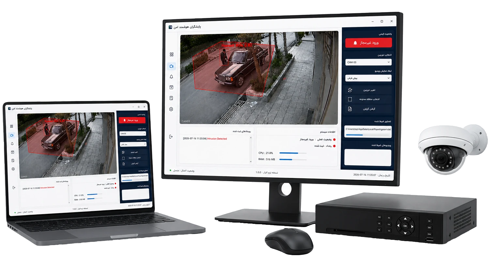
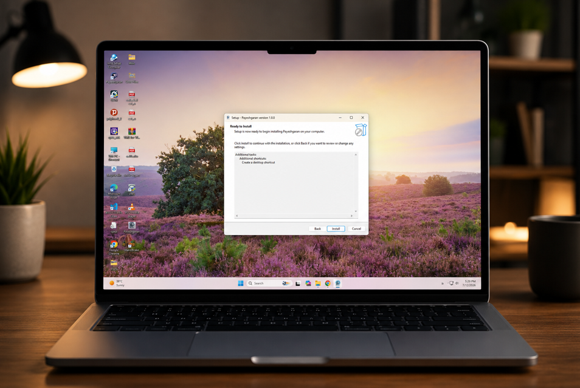
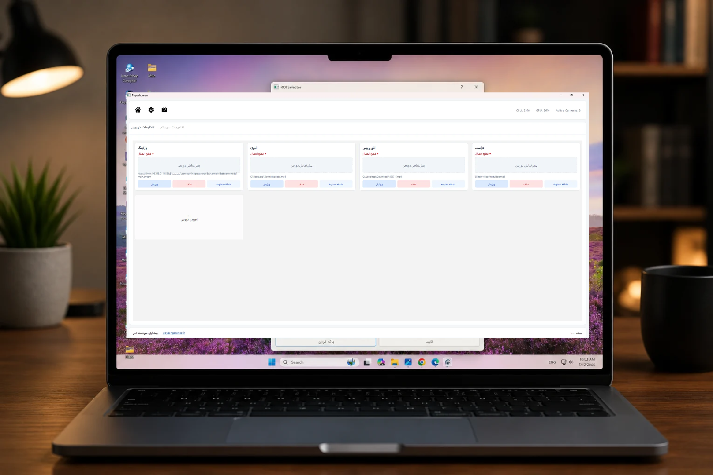
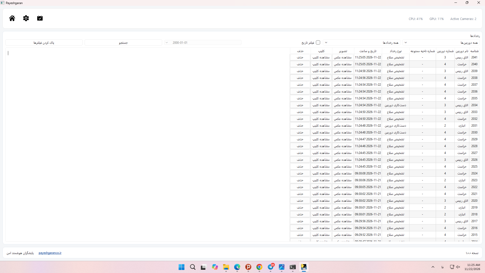
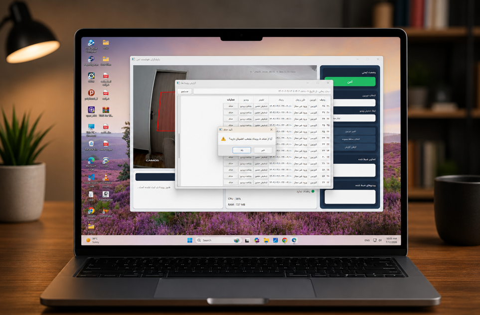

شناسایی رویدادهای امنیتی
شناسایی رویدادهایی مانند تشخیص سلاح، ورود به مناطق ممنوعه و دستکاری دوربین و نمایش هشدار در نرمافزار.

نرمافزار پایشگران هوشمند امن با بهرهگیری از مدل اختصاصی هوش مصنوعی، تصاویر حداکثر ۴ دوربین مداربسته را تحلیل میکند و رویدادهایی مانند تشخیص سلاح، دستکاری دوربین و ورود افراد به مناطق ممنوعه را شناسایی میکند. برای هر دوربین میتوان چند منطقه ممنوعه تعریف کرد.
شناسایی رویدادهایی مانند تشخیص سلاح، ورود به مناطق ممنوعه و دستکاری دوربین و نمایش هشدار در نرمافزار.
مدل تشخیص مبتنی بر یادگیری عمیق که برای شناسایی افراد و سلاح آموزش و تنظیم اختصاصی شده است.
پشتیبانی از حداکثر ۴ دوربین و امکان تعریف چند منطقه ممنوعه بهصورت مستقل برای هر دوربین.
پایش وضعیت تصویر دوربین و شناسایی تغییرات مشکوک ناشی از دستکاری یا اختلال در تصویر.
عملکرد نرمافزار پایشگران هوشمند امن را از نزدیک ببینید. این ویدیو قابلیت تحلیل تصاویر دوربینها، تشخیص سلاح، شناسایی ورود افراد به مناطق ممنوعه و ثبت رویدادهای امنیتی را نمایش میدهد.
مشاهده ویدیو



تا ۴ دوربین مداربسته تحت شبکه را به نرمافزار متصل کنید.
برای هر دوربین، یک یا چند منطقه ممنوعه متناسب با محیط تعریف کنید.
مدل هوش مصنوعی افراد و سلاح را تشخیص میدهد و ورود افراد به مناطق ممنوعه را بررسی میکند.
رویدادهای شناساییشده همراه با اطلاعات و تصویر مرتبط ثبت میشوند و دستکاری یا اختلال در تصویر دوربین قابل شناسایی است.
بله، نسخه فعلی نرمافزار از پایش همزمان حداکثر ۴ دوربین مداربسته پشتیبانی میکند.
بله، برای هر دوربین میتوان چند منطقه ممنوعه تعریف کرد و رویدادهای ثبتشده را در نرمافزار بررسی کرد.
قابلیتهای اصلی شامل تشخیص سلاح، تشخیص دستکاری یا اختلال در تصویر دوربین و شناسایی ورود افراد به مناطق ممنوعه است.
پردازش اصلی و ذخیرهسازی اطلاعات بهصورت محلی انجام میشود و برای عملکرد اصلی نرمافزار به سرویس ابری نیاز نیست.
نرمافزار از دوربینهای تحت شبکهای که جریان تصویر آنها از طریق RTSP در دسترس باشد پشتیبانی میکند.
نرمافزار برای نصب و اجرا روی ویندوز ۱۰ و ویندوز ۱۱ آماده شده است.